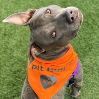
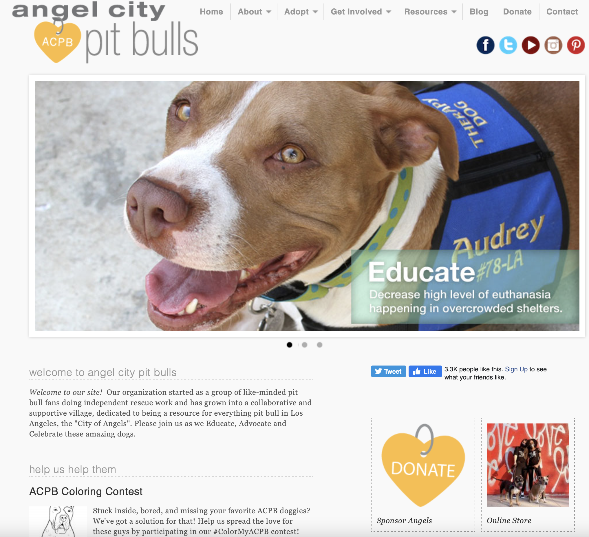

Audience and Goals
Overarching Goals
Client:

- Raise awareness about the true nature of pit bulls and provide resources for adoption, rehoming, and other information
- Reach people in the Los Angeles area and provide the opportunity for adoption, donation, fostering or volunteer work
- Showcase success stories to those who are contemplating adoption furthering the possibility of commitment
Audience:

- Receive information about ACPB and who they are and what they provide, being resources answering common questions
- Provide homes for pit bulls by individuals who are educated and responsible and are aware of the process of rehoming
- Help in any way possibile, be that to donate monetarily if able, volunteer if willing and local, or raise awareness
Website:

- Make information and resources easy to find and learn through
- Raise money and awareness through donations
- Provide an easy way of communication between the organization and audience
.
Specific Goals
| User | Goal | Action |
|---|---|---|
| Those looking to adopt | Provide a home to a dog who has been sheltered | Seek out dogs who have been in shelters/kennels for a period of time and give them a home. |
| Shelter Volunteers | Take care of dogs that have yet to be adopted and prepare them for adoption | Work toward taking care of sheltered dogs, looking after them until they are adopted. Making sure they are ready for a transition to their new home. |
| Dog Shelters | Provide information on caring for dogs and availability for adoption | Provide a space for street dogs or abandoned dogs with proper care and space for possible adoption opportunity. |
| NKLA: No-Kill Los Angeles | Seek out abandoned street dogs and make sure that they do not get put down | Work with local shelters to be able to take in new dogs, providing finances to keep as many dogs alive. |
| Dog Foster families | Take in dogs in need until they can have a forever home. | Make their homes available for dogs to be able to stay in order to make an easier transition to a permanent home. |